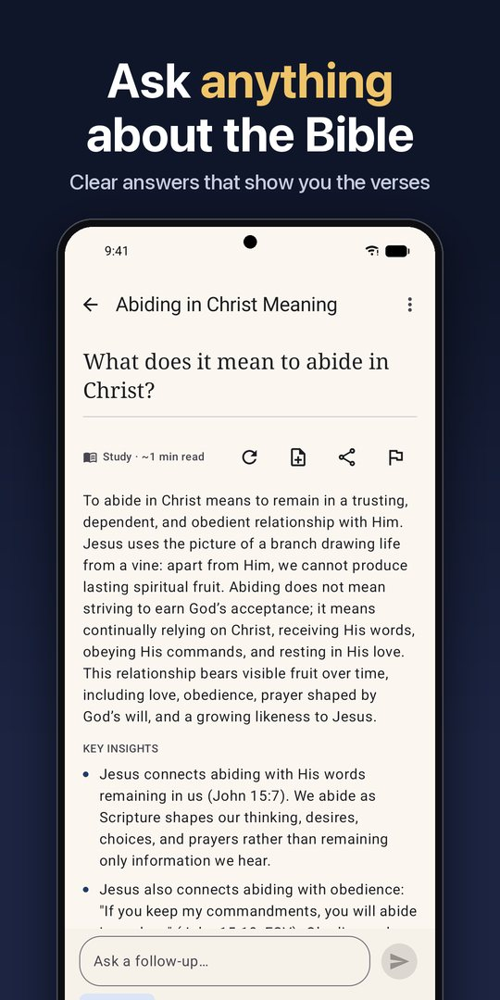
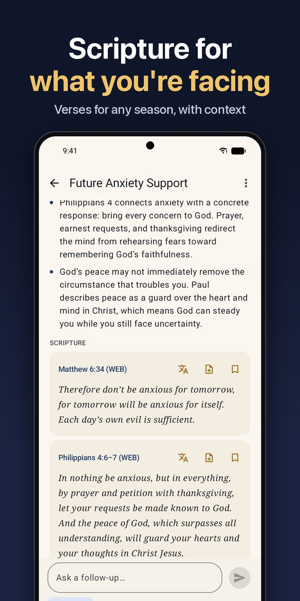
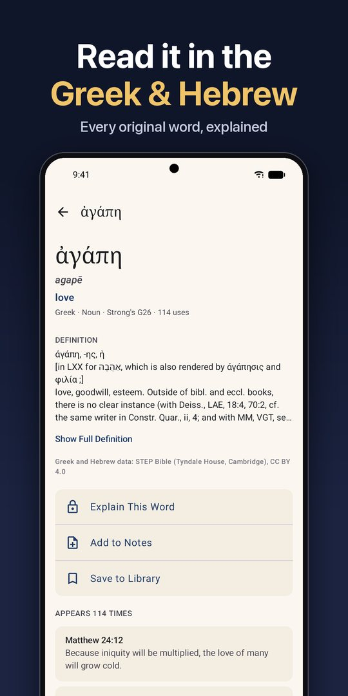
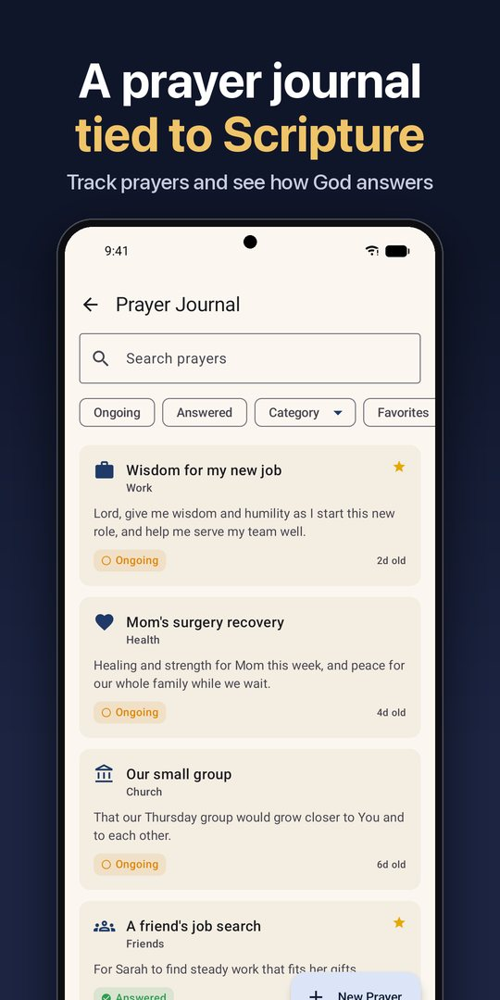

I rebuilt ScriptureAI for Android from the ground up. Ask any Bible question and get an answer that shows you the verses, find Scripture for what you're facing, and see the Greek and Hebrew behind your Bible.
Before Google lets a new app launch, at least 12 people have to test it for 14 days in a row. If you have an Android phone, I'd love your help.

Do these on your Android phone, signed in with the same Google account you use for the Play Store.
Tap Join group. This is what adds you to the beta. You won't get emails.
Tap Become a tester on Google's page.
Install ScriptureAI, then keep it installed for at least two weeks.
Seeing “App not available”? Make sure you finished step 1 with the same Google account you're signed in with on your phone, then wait a few minutes and try step 2 again.
Ask anything · Find a Verse · Greek & Hebrew · sermon notes · daily verse & reflection · devotionals · prayer journal



Yes. You can ask questions, find verses, read the Greek and Hebrew, take notes, and keep a prayer journal for free, with some limits. ScriptureAI Pro removes the limits, but you don't need it to help test.
No. There's nothing to sign up for. Your studies, notes, and prayers stay on your phone.
Use the app like you normally would and keep it installed for two weeks. If something breaks, confuses you, or an answer seems off, email hello@scriptureai.app or use the flag button on any answer. I read everything.
As soon as the 14-day test wraps and Google approves it. Testers keep the app and get updates automatically.
Android 8.0 and newer.